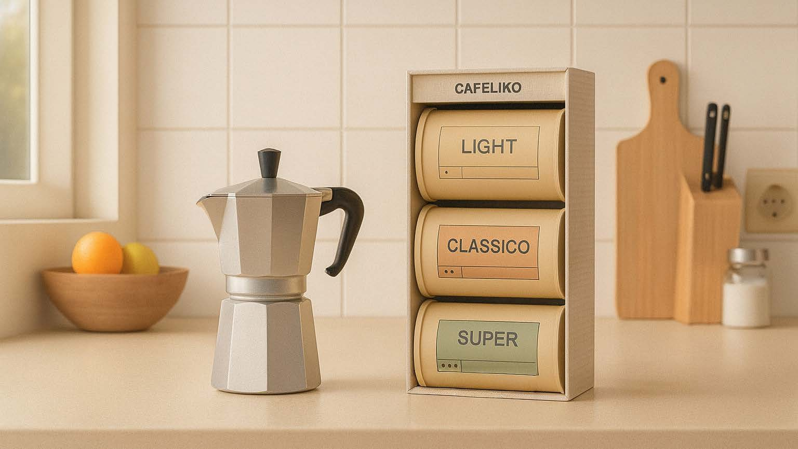
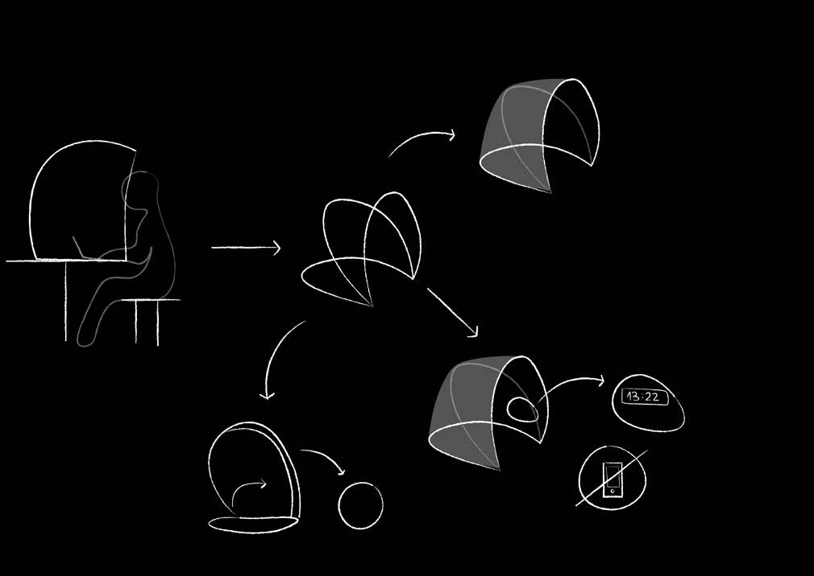
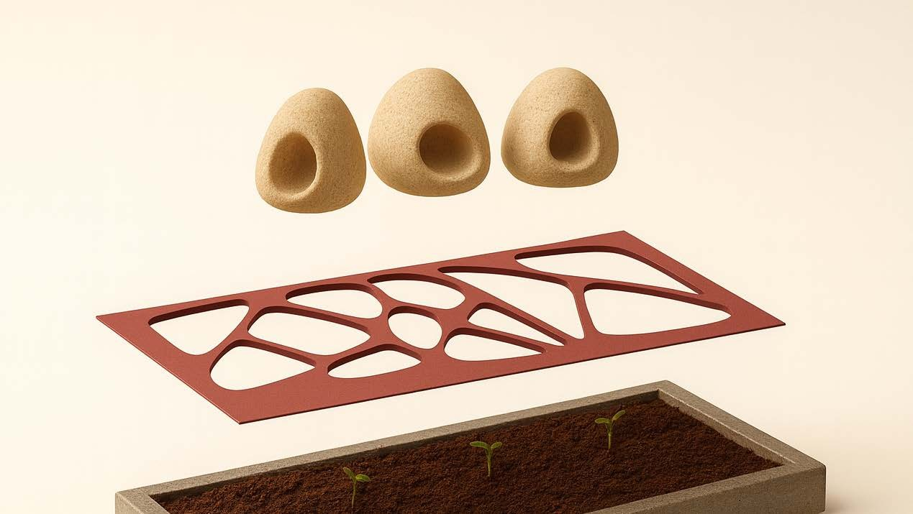
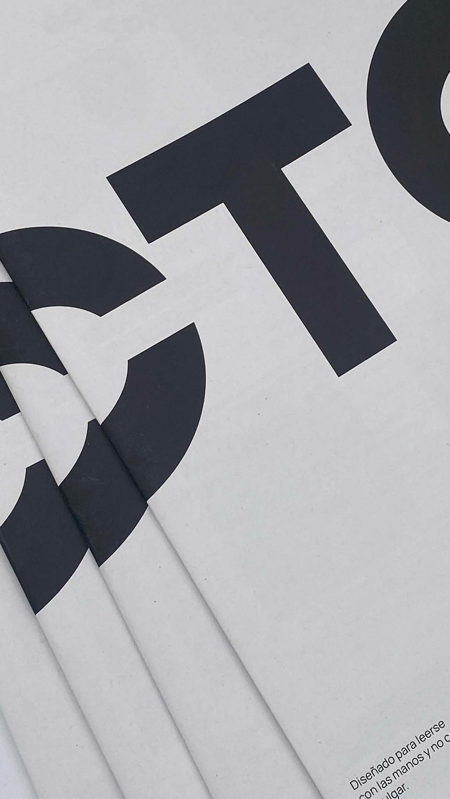

Empatía en el centro
Cada proyecto nace de observar fricciones reales en la vida cotidiana — desde la saturación digital hasta la soledad en un primer día de oficina o los residuos del café diario.
Soy Ana Galilea, diseñadora de producto. Transformo pequeñas rutinas en experiencias tangibles y significativas.
Parto de una mirada centrada en las personas y trabajo de forma transversal durante todo el proceso: desde la investigación etnográfica y la conceptualización hasta el objeto físico, el packaging, la interfaz y el servicio que lo sostiene.
«Diseñar es entrar en la vida de las personas con respeto y responsabilidad: observar sus rutinas, entender sus necesidades y transformar pequeños gestos cotidianos en experiencias significativas.»

55% / 80%¿Se podrían crear grados de cafeína?
Cada proyecto nace de observar fricciones reales en la vida cotidiana — desde la saturación digital hasta la soledad en un primer día de oficina o los residuos del café diario.
El producto físico nunca vive aislado: diseño el packaging, el mobiliario urbano, el recorrido espacial y la narrativa que convierten un uso puntual en un hábito.
Iteración rápida entre boceto estructural, maqueta volumétrica, diseño editorial y validación funcional para que cada pieza sea fabricable, honesta y duradera.
Materiales biodegradables, dispersión ecológica, bienestar digital y reducción de fricción: soluciones con propósito que cuidan a las personas y a su entorno.

01 · Boceto & Mecanismo · Focus
02 · Arquitectura en Capas · Chile
03 · Diseño Editorial · Tacto